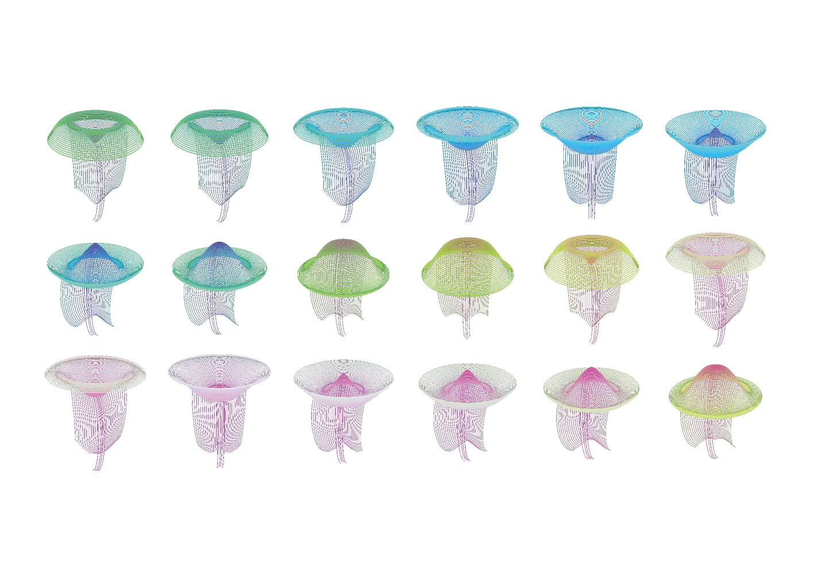

해파리
2023.12


00:16
해파리를 상징적으로 활용하여 각자의 독특한 내면을 표현하고,
이들이 조화롭게 이루어질 때 어떠한 아름다움이 청조될 수 있는지를 시각적으로 표현했다.
사람들을 해파리와 대치시키고, 개개인의 내면을 해파리의 맑은 빛으로 연결했다.
이러한 해파리들이 모여 바다를 이루는 모습은 각자의 내면들이 조화를 이루는 것이며
사회적 조화를 표현한다.